Quiet software,
in hard light.
Gouache-painted plates from CC0 photographs: Mediterranean noon by day, an LA dusk by night. Press the sun in the corner.


I build softwarethat pays for itself.
Three plates, painted
Every plate ships as AVIF, WebP and JPEG at 640, 1280, 1920 and 2400 px, with a 24 px placeholder for zero layout shift.
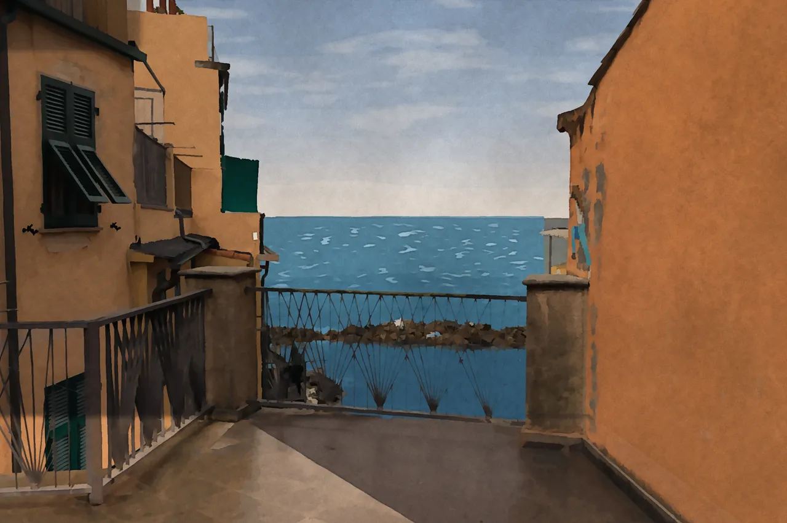
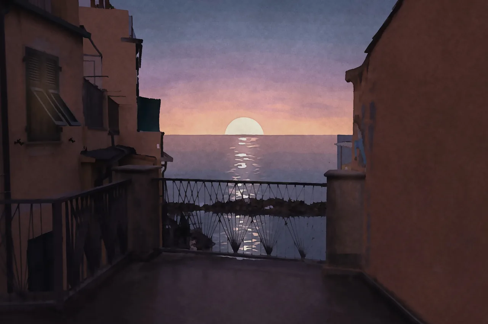
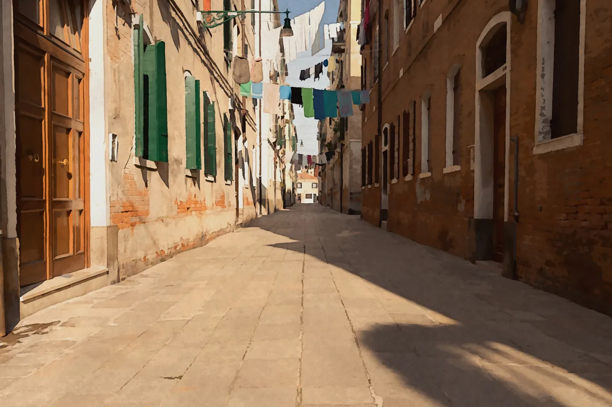
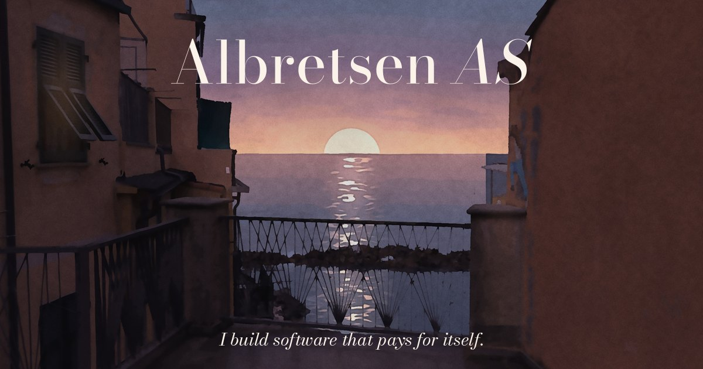
An arch, a horizon, a sun
The mark is an arched opening with thick didone verticals and a hairline crown. Read it twice and it is an A.
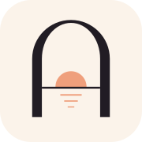
LA dusk, Mediterranean noon
Bodoni Moda & Jost
A Parisian didone with optical sizes for display and italic accents; Jost, a geometric sans in the Futura tradition, for labels and body. Both OFL.
Real logos, in the street
Each live product's real logo, unaltered, mounted on a painted façade: an enamel door plate, a gilt shop fascia, a square plaque, a dark sign.
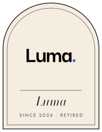
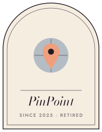
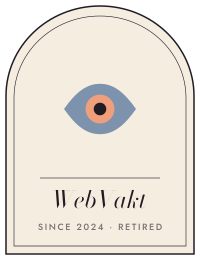
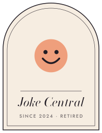
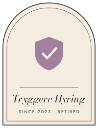
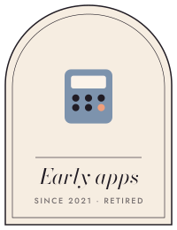
Paper, pigment, post
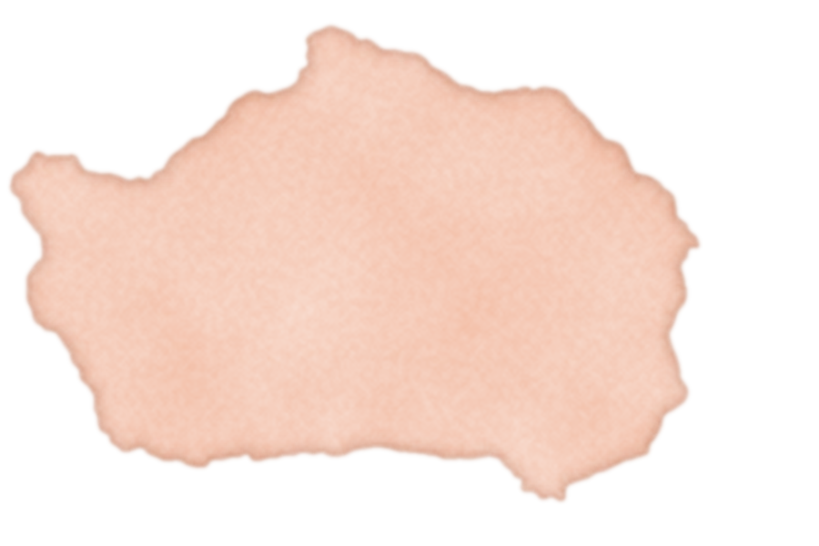
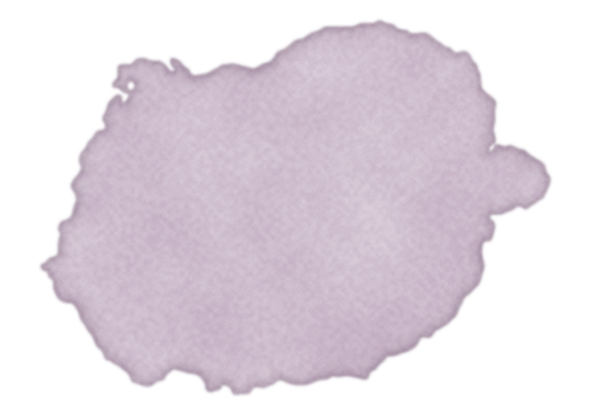
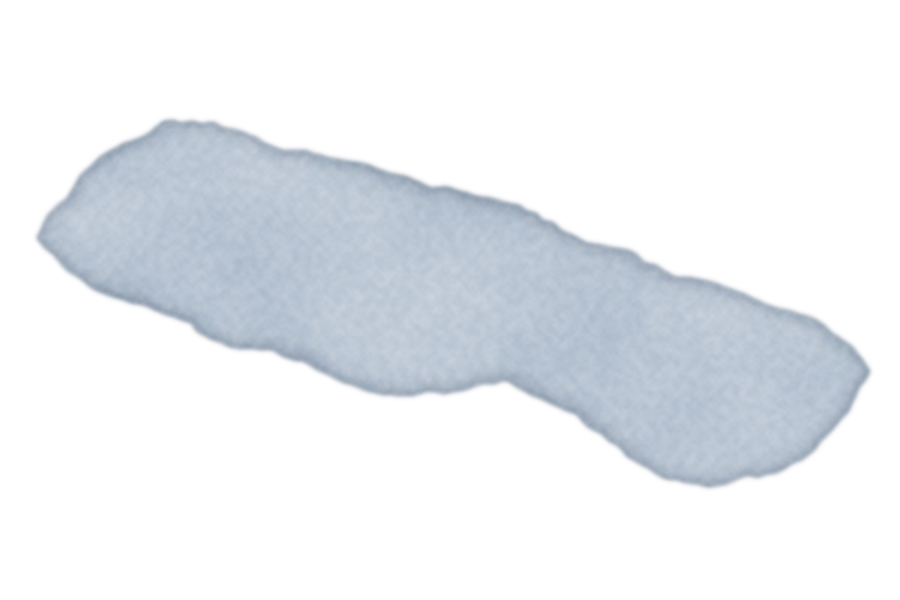
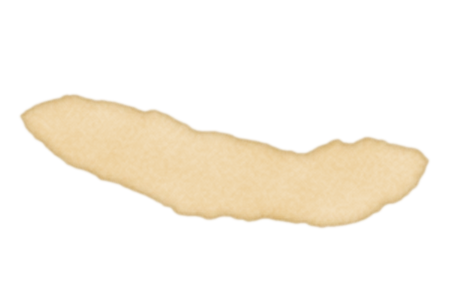


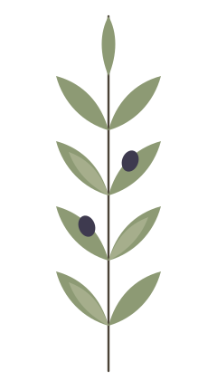
Rooftops, live
three.js, loaded only when this frame scrolls into view. A strictly symmetrical row of zinc mansards with a gouache post-process. It follows the page theme: the sun sinks, the moon lowers into the same place, windows light up.
Move the pointer for a level dolly. Poster stills ship for no-WebGL and first paint. Standalone demo
Precise, symmetrical, deadpan
Five named movements in motion.css / motion.js. The sunset switch is in the masthead, the arch opening is the hero, the caption card sits below it, the whip pan is in Products. Shutters:
Shutters
Leaves close from the edges and meet on the seam, hold one beat (240 ms), open on the next plate. 560 ms each way, cubic-bezier(.65, 0, .35, 1).